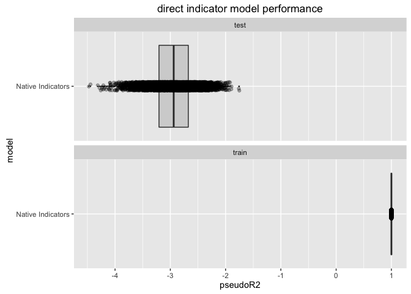

##
## Attaching package: 'dplyr'
## The following objects are masked from 'package:stats':
##
## filter, lag
## The following objects are masked from 'package:base':
##
## intersect, setdiff, setequal, union
library('tidyr')
library('sigr') # https://github.com/WinVector/sigr
library('ggplot2')
library('vtreat')
source('fns.R')
set.seed(236526)
cl <- parallel::makeCluster(parallel::detectCores())
parallel::clusterExport(cl=cl, setdiff(ls(),'cl'),
envir=environment())
for(lib in c('dplyr', 'tidyr', 'vtreat' )) {
mkfn <- function(lib) {
force(lib)
function() {
library(lib,character.only = TRUE)
}
}
fn <- mkfn(lib)
parallel::clusterCall(cl, fn )
}
cacheFile <- 'fitDirect.RDS'
if(!file.exists(cacheFile)) {
mkRunExpmt <- function() {
function(runnum) {
generator = defineGenerator(5,20,0.75,0.3)
ndup = 0
dTrain <- generateData(generator,ndup,500)
dTest <- generateData(generator,ndup,10000)
# often errors-out on due to novel levels (if it happens, a rare but possible event)
vars <- setdiff(colnames(dTrain),'y')
novelRows <- sort(unique(unlist(lapply(vars,
function(vi) {
which(!(dTest[[vi]] %in% unique(dTrain[[vi]])))
}))))
dTestSub <- dTest
resi <- runIndicators(dTrain,dTest[setdiff(seq_len(nrow(dTest)),novelRows),,drop=FALSE])
resi$novelRows <- length(novelRows)
resi$ndup <- ndup
resi$runnum <- runnum
resi
}
}
runner <- mkRunExpmt()
exmpts <- parallel::parLapplyLB(cl,seq_len(5000),runner)
fitRes <- dplyr::bind_rows(exmpts)
saveRDS(fitRes,file=cacheFile)
} else {
fitRes <- readRDS(file=cacheFile)
}
d <- readRDS('fitDirect.RDS')
d$ndup <- factor(d$ndup,levels = rev(sort(unique(d$ndup))))
print(mean(d$novelRows))
## [1] 0.1
print(mean(d$novelRows>0))
## [1] 4e-04
print(WVPlots::ScatterBoxPlotH(d,'pseudoR2','ndup','direct indicator model performance') +
facet_wrap(~data,ncol=1))

parallel::stopCluster(cl)